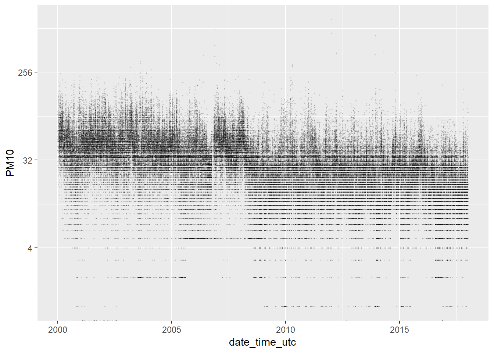
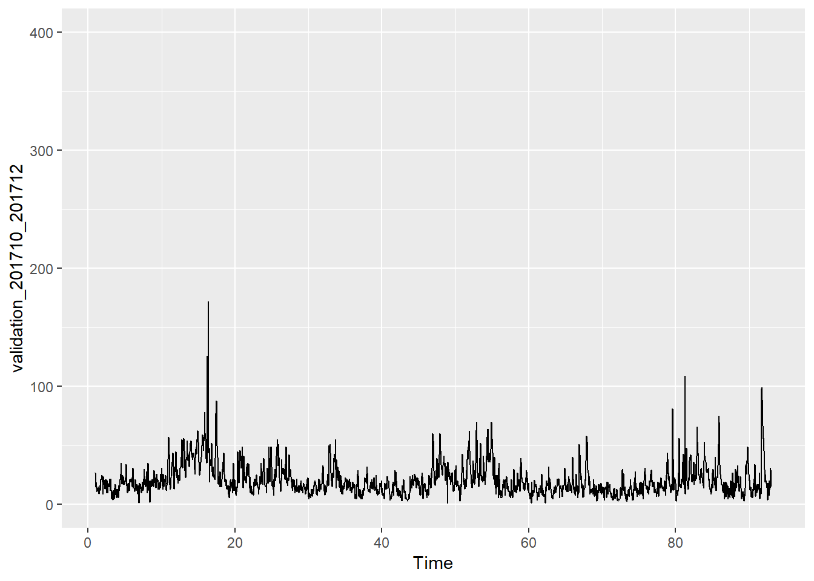
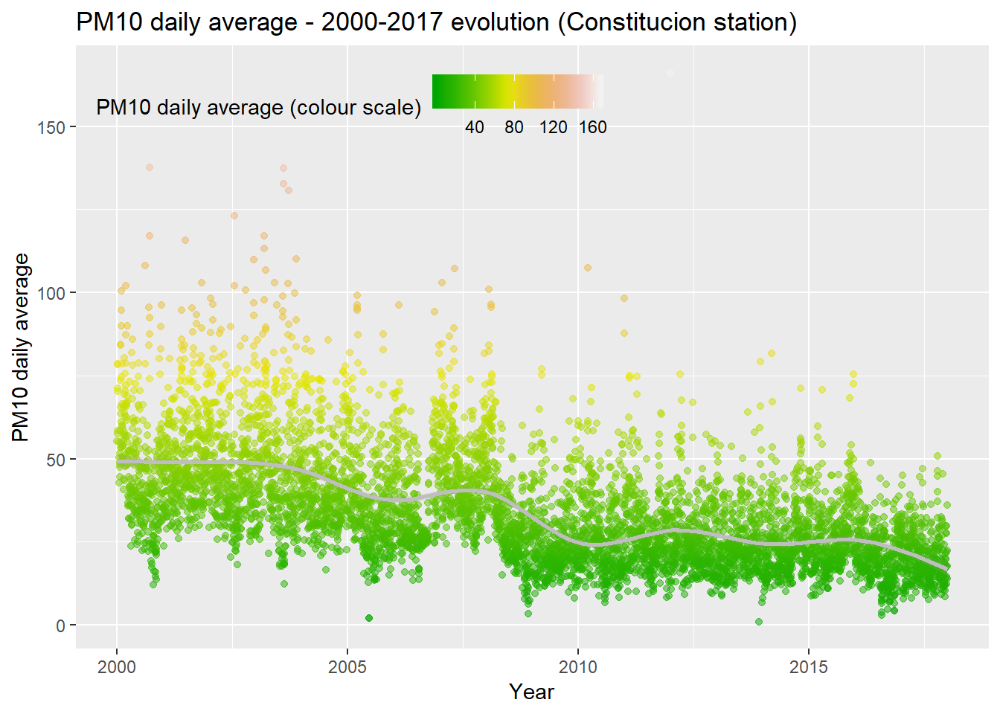
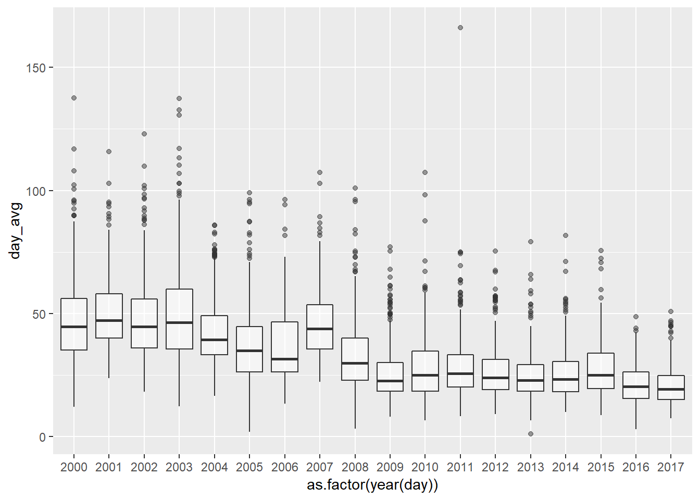
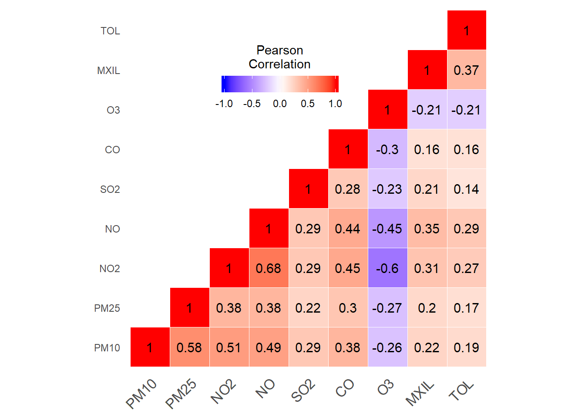
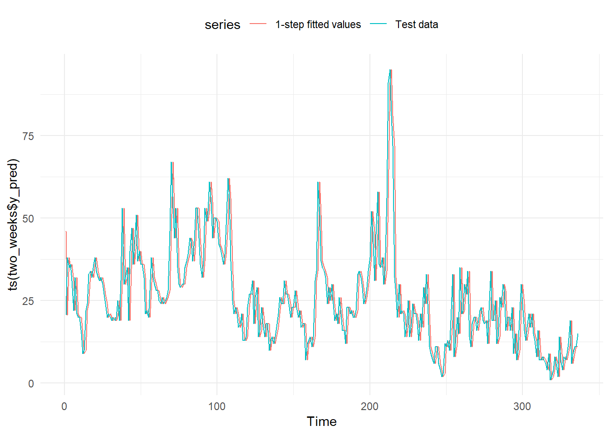
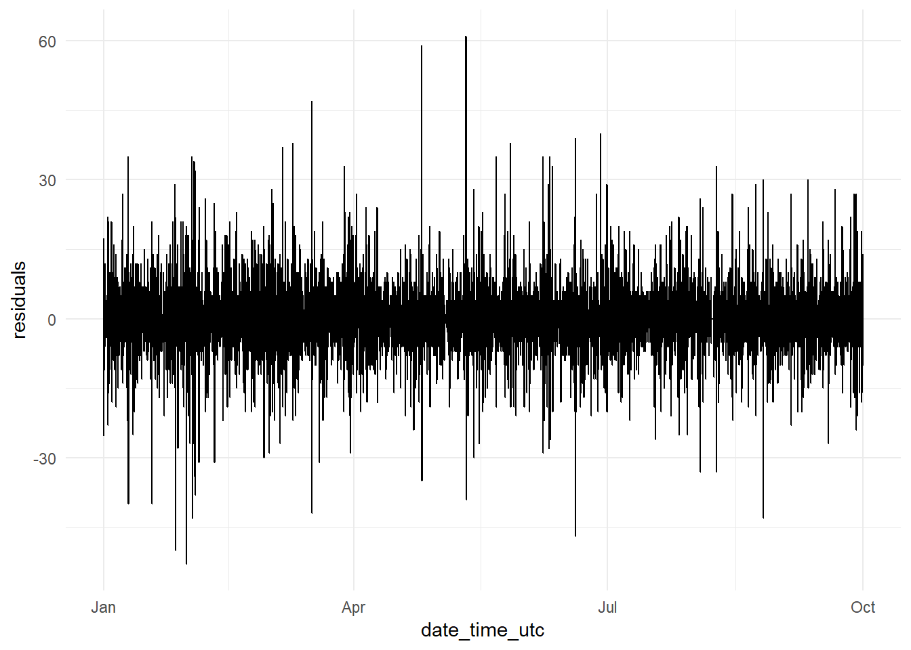
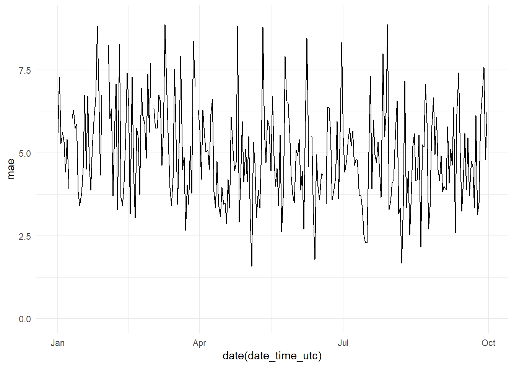

9 Prediction Models. ARIMA
On this notebook we are going to try to predict one hour - six hours ahead with ARIMA PM10 NO2
9.1 PM10 hourly prediction models
We are going to focus on the Constitucion station, which is the only station w e have meteorological data. And, at first, we are going to construct models only for predicting PM10 levels.
As first approach we are going to use auto regressive models. So, we will use as explicative variables only lagged values of the variable to predict. In this case PM10 values.
Loading packages
library(readr)
library(dplyr)
library(tidyr)
library(openair) # http://davidcarslaw.github.io/openair/
library(purrr)
library(lubridate)
library(ggplot2)
library(stringr)
library(knitr)
library(xts)
library(zoo)
library(gridExtra)
library(astsa)
library(rvest)
library(fpp2)
library(ranger)
library(broom)
library(RcppRoll)
library(caret)9.1.1 Data loading
air_data_2 <- readRDS("data_rds/air_data_2.rds")
constitucion_data <- air_data_2 %>% filter(station == "1")9.1.2 Train, test and validation data
We have 18 years of avalaible data. But we are not going to use all the data. Initially we are going to use just three years for the training of the models (2014-2016) and one year (2017) for testing and validation.
Reasons (pending redaction):
- Time of training process.
- Not all models can take advantage of such long time series. In fact we will see as sometimes smaller datasets achieve similar results.
Train data: 2014-01-01 - 2016-12-31
Test data: 2017-01-01 - 2017-09-30
Validation data: 2017-10-01 - 2017-12-31
train_201401_201612 <- constitucion_data %>% filter(date_time_utc >= '2014-01-01 00:00:00',
date_time_utc <= '2016-12-31 23:00:00') %>%
select(PM10) %>%
mutate(PM10 = replace_na(PM10, mean(PM10, na.rm = TRUE))) %>% # replacing NAs by the mean.
rename(PM10_0 = PM10) %>%
ts(frequency = 24)
# We generate a smaller training dataset with the last three months of 2016
train_201610_2016_12 <- constitucion_data %>% filter(date_time_utc >= '2016-10-01 00:00:00',
date_time_utc <= '2016-12-31 23:00:00') %>%
select(PM10) %>%
mutate(PM10 = replace_na(PM10, mean(PM10, na.rm = TRUE))) %>%
rename(PM10_0 = PM10) %>%
ts(frequency = 24)
test_201701_201709 <- constitucion_data %>% filter(date_time_utc >= '2017-01-01 00:00:00',
date_time_utc <= '2017-09-30 23:00:00') %>%
select(PM10) %>%
mutate(PM10 = replace_na(PM10, mean(PM10, na.rm = TRUE))) %>%
rename(PM10_0 = PM10) %>%
ts(frequency = 24)
# We generate a smaller testing dataset with the first two weeks of 2016.
test_20170101_20170114 <- constitucion_data %>% filter(date_time_utc >= '2017-01-01 00:00:00',
date_time_utc <= '2017-01-14 23:00:00') %>%
select(PM10) %>%
mutate(PM10 = replace_na(PM10, mean(PM10, na.rm = TRUE))) %>%
rename(PM10_0 = PM10) %>%
ts(frequency = 24)
validation_201710_201712 <- constitucion_data %>% filter(date_time_utc >= '2017-10-01 00:00:00',
date_time_utc <= '2017-12-31 23:00:00') %>%
select(PM10) %>%
mutate(PM10 = replace_na(PM10, mean(PM10, na.rm = TRUE))) %>%
rename(PM10_0 = PM10) %>%
ts(frequency = 24)9.1.3 Data Exploration
we plot the three time series using the function autoplot we just generated.
autoplot(train_201401_201612)
autoplot(test_201701_201709, ylim = c(0, 400))autoplot(validation_201710_201712,ylim = c(0, 400)) ### Base model.
In order to create a base model we are going to take as prediction the value from the previous hour, forecasting just one hour ahead.
# As we don't need any training, because we have already defined the model as Xt = Xt-1, we only need to create a testing dataset. We choose the same period as before but we don't use the time series format (ts).
test_201701_201709_2 <- constitucion_data %>% filter(date_time_utc >= '2017-01-01 00:00:00',
date_time_utc < '2017-10-01 00:00:00') %>%
select(PM10) %>%
mutate(PM10 = replace_na(PM10, mean(PM10, na.rm = TRUE))) # We replace the nas (36) by the mean.
base_model <- test_201701_201709_2 %>% mutate(y_pred = lag(PM10, 1)) %>% # We create the column y_pred with the lagged value of PM10 (one hour).
rename(y_test = PM10) %>% # We change the name of the PM10 column to y_test
na.omit() # We remove the observations with nas (just the first row)
y_test <- base_model$y_test
y_pred <- base_model$y_pred
sd_test <- sd(y_test)
RMSE <- RMSE(y_test, y_pred)
MAE <- MAE(y_test, y_pred)
rss <- sum((y_pred - y_test) ** 2)
tss <- sum((y_test - mean(y_test)) ** 2)
R_squared <- 1 - rss/tss
paste(c("R-Squared:", round(R_squared, 4), "MAE:", round(MAE, 2), "RMSE:", round(RMSE, 2), "Standard Deviation (test data):", round(sd_test, 2)))## [1] "R-Squared:" "0.5327"
## [3] "MAE:" "5.15"
## [5] "RMSE:" "7.45"
## [7] "Standard Deviation (test data):" "10.9"So, for the one hour PM10 prediction if we take as prediction the previous PM10 hour level we would have a R-squared of 0.5327. So, the model is explaining 53% of the variability of the target variable.
Estimation of errors. We are going to use the MAE (Mean Absolute Error) in order to compare the different models. We choose the MAE over the RMSE (Root Mean Squared Error) because it is easier to interpret and at the same time it is more robust (less sensitive to outliers). Either way, we are going to calculate the RMSE too, precisely because its sensitivity to outliers. It will give us useful information about the behaviour of each model.
We take a look to the relation between the predictions and the actual values.
df <- bind_cols(as.data.frame(y_pred), as.data.frame(y_test))
y_pred_y_test_base_model_graph <- ggplot(data = df, aes(x = y_test, y = y_pred)) +
geom_point(alpha = 0.5) +
theme_minimal()
y_pred_y_test_base_model_graph We plot the distribution of the errors
ggplot(data = df, aes(x = y_pred - y_test)) +
geom_histogram() +
theme_minimal()
We plot two lines with the predictions and the actual values. We have a problem of overplotting.
autoplot(ts(base_model$y_pred), series="1-step fitted values") +
autolayer(ts(base_model$y_test),
series="Test data") +
theme_minimal() +
theme(legend.position="top")We plot just the first 14 days of 2017.
two_weeks <- base_model %>% slice(1:336) # 336 corresponds to 24 hours * 14 days.
autoplot(ts(two_weeks$y_pred), series="1-step fitted values") +
autolayer(ts(two_weeks$y_test),
series="Test data") +
theme_minimal() +
theme(legend.position="top")And as expected, we get two identical lines. But one of them, the prediction, one step forward than the line with the actual data.
9.1.4 ARIMA model
To fit our first ARIMA model we are going to use the auto.arima function from the Forecast package. This function …
# model_arima_0 = auto.arima(train_201401_201612,seasonal=TRUE,trace=TRUE) # It took 2 hours to fit the model
# saveRDS(model_arima_0, "data_rds/model_arima_0.rds")
model_arima_0 <- readRDS("data_rds/model_arima_0.rds")
summary(model_arima_0)## Series: train_201401_201612
## ARIMA(2,1,3)(0,0,2)[24]
##
## Coefficients:
## ar1 ar2 ma1 ma2 ma3 sma1 sma2
## 0.0991 0.5519 -0.5228 -0.6175 0.1642 0.0564 0.0392
## s.e. NaN NaN NaN NaN NaN 0.0063 0.0061
##
## sigma^2 estimated as 87.28: log likelihood=-96095.71
## AIC=192207.4 AICc=192207.4 BIC=192272.8
##
## Training set error measures:
## ME RMSE MAE MPE MAPE MASE ACF1
## Training set 0.003353175 9.341125 5.774614 -Inf Inf 0.5111664 0.002213004#test$arima=forecast(model_arima,h=24)$meanEXPLAIN THE RESULTS p, d, q P, D, Q etc…
To obtain the R-Squared…
y_train <- forecast(model_arima_0, h = 1)$fitted # We make a forecast one hour ahead and we extract the fitted values from the object forecast.
x_train <- train_201401_201612
rss <- sum((y_train - x_train) ** 2)
tss <- sum((x_train - mean(x_train)) ** 2)
R_squared <- 1 - rss/tss
paste(c("R-Squared:", round(R_squared, 4)))## [1] "R-Squared:" "0.6031"The R-Squared has increased from 0.5327 to 0.6031. But both, RMSE (9.34) and MAE (5.77), are greater than the scores obtained with the Base Model. But we are comparing two different periods, the testing period (Base Model; 2017-01 - 2017-09) versus the training period (ARIMA model; 2014 - 2016).
To make a fair comparison we will have to compare the same periods. Especially since we know they have important differences in variability.
For this we are going to apply the ARIMA model model_arima_0 on the testing data. Doing so we will be able to get the fitted values from this period and we will be able to obtain its error scores.
y_pred <- forecast(test_201701_201709, model = model_arima_0, h=1)$fitted # We call the forecast function passing the testing data through the ARIMA model fitted with the training data and we extract the fitted values.
y_test <- test_201701_201709
sd_test <- sd(y_test)
RMSE <- RMSE(y_test, y_pred)
MAE <- MAE(y_test, y_pred)
rss <- sum((y_pred - y_test) ** 2)
tss <- sum((y_test - mean(y_test)) ** 2)
R_squared <- 1 - rss/tss
paste(c("R-Squared:", round(R_squared, 4), "MAE:", round(MAE, 2), "RMSE:", round(RMSE, 2), "Standard Deviation (test data):", round(sd_test, 2)))## [1] "R-Squared:" "0.6015"
## [3] "MAE:" "4.84"
## [5] "RMSE:" "6.88"
## [7] "Standard Deviation (test data):" "10.9"We confirm we are obtaining a better R-Squared: 0.6015 versus the 0.5327 obtained by the Base Model. The errors are sustantially better too. The ARIMA model obtains a MAE of 4.84 (Base Model: 5.15) and a RMSE of 6.88 (Base Model: 7.45).
Furthermore, the prediction errors on the test data are smaller than in the training data. It could be counterintuitive but the test period (2017-01 - 2017-09) contains much less variability (sd = 10.91) than the training period (2014-01 - 2016-12; sd = 14.83). This could be affecting the error scores.
We plot the fitted values and the test data.
autoplot(y_test, series="Test data") +
autolayer(y_pred,
series="1-step fitted values") +
theme_minimal() +
theme(legend.position="top")
We have made the forecast for one hour ahead and we have estimated its precission. But what happens when we try to forecast more distant values?
In order to check the precission of this ARIMA model with forecasts more … we are going to use the fitted
# First of all we create with the Arima function the object arima.test
arima.test <- Arima(test_201701_201709, model=model_arima_0)And with the fitted function, setting its parameter to 6, we fit and extract the fitted values corresponding to the forecast 6 hours ahead (check redaction)
h6 <- fitted(arima.test, h = 6) # It takes a lot of time
saveRDS(h6, "data_rds/arima_model_0_test_fitted_values_h6.rds") # We save the final object as a rds filefitted_values_h6 <- readRDS("data_rds/arima_model_0_test_fitted_values_h6.rds")We assign to y_test and y_pred the test dataset and its predictions.
y_test <- test_201701_201709
y_pred <- fitted_values_h6The first rows of y_pred are NAs. That is because we are making prediction 6 hours ahead.
head(y_pred, 10)## Time Series:
## Start = c(1, 1)
## End = c(1, 10)
## Frequency = 24
## x
## [1,] NA
## [2,] NA
## [3,] NA
## [4,] NA
## [5,] NA
## [6,] NA
## [7,] NA
## [8,] 31.67340
## [9,] 36.69984
## [10,] 36.44485So, we remove the NAs from the y_pred time series, and the equivalent rows from the y_test object.
y_pred <- y_pred %>% na.omit()
y_test <- y_test %>% subset(start = 8)And we obtain the scores to know the goodness of the model of 6 hours ahead
RMSE <- RMSE(y_test, y_pred)
MAE <- MAE(y_test, y_pred)
rss <- sum((y_pred - y_test) ** 2)
tss <- sum((y_test - mean(y_test)) ** 2)
R_squared <- 1 - rss/tss
paste(c("R-Squared:", round(R_squared, 4), "MAE:", round(MAE, 2), "RMSE:", round(RMSE, 2), "Standard Deviation (test data):", round(sd_test, 2)))## [1] "R-Squared:" "0.2118"
## [3] "MAE:" "7.12"
## [5] "RMSE:" "9.68"
## [7] "Standard Deviation (test data):" "10.9"R-Squared: 0.2118. When we try to predict the levels of PM10 6 hours ahead this Arima model is only able to explain a 21% of the variability. Errors: Consequentely the errors grow too…
9.2 We have been using a dataset for training of 3 years. Is this necessary? Does the Arima algorithm take advantage of a so long time series?
To check this we are going to use now a training period much shorter. We will use just three months, the last three months of 2016.
We repeat …
model_arima_1 = auto.arima(train_201610_2016_12,seasonal=TRUE,trace=TRUE) #
saveRDS(model_arima_1, "data_rds/model_arima_1.rds")model_arima_1 <- readRDS("data_rds/model_arima_1.rds")
summary(model_arima_1)## Series: train_lite
## ARIMA(2,1,4)(0,0,2)[24]
##
## Coefficients:
## ar1 ar2 ma1 ma2 ma3 ma4 sma1 sma2
## 0.1006 0.547 -0.5222 -0.6079 0.1543 -0.0107 0.0977 0.1135
## s.e. NaN NaN NaN NaN NaN 0.0184 0.0222 0.0215
##
## sigma^2 estimated as 71.56: log likelihood=-7844.97
## AIC=15707.94 AICc=15708.02 BIC=15759.24
##
## Training set error measures:
## ME RMSE MAE MPE MAPE MASE ACF1
## Training set 0.1536203 8.442183 5.17907 -Inf Inf 0.545021 -0.0004040565The model selected by the auto.arima function is very similar to the former model
train_201610_2016_12: ARIMA(2,1,4)(0,0,2)[24] train_201401_201612: ARIMA(2,1,3)(0,0,2)[24]
Coefficients lite: ar1 ar2 ma1 ma2 ma3 ma4 sma1 sma2 0.1006 0.547 -0.5222 -0.6079 0.1543 -0.0107 0.0977 0.1135
Coefficients 2014-2016: ar1 ar2 ma1 ma2 ma3 sma1 sma2 0.0991 0.5519 -0.5228 -0.6175 0.1642 0.0564 0.0392
We apply this model to the testing data
y_pred <- forecast(test_201701_201709, model = model_arima_1, h=1)$fitted # We call the forecast function passing the testing data through the ARIMA model fitted with the training data and we extract the fitted values.
y_test <- test_201701_201709
sd_test <- sd(y_test)
RMSE <- RMSE(y_test, y_pred)
MAE <- MAE(y_test, y_pred)
rss <- sum((y_pred - y_test) ** 2)
tss <- sum((y_test - mean(y_test)) ** 2)
R_squared <- 1 - rss/tss
paste(c("R-Squared:", round(R_squared, 4), "MAE:", round(MAE, 2), "RMSE:", round(RMSE, 2), "Standard Deviation (test data):", round(sd_test, 2)))## [1] "R-Squared:" "0.5975"
## [3] "MAE:" "4.88"
## [5] "RMSE:" "6.92"
## [7] "Standard Deviation (test data):" "10.9"The model scores barely changes. So, in order to speed computation we are going to use this training period from now. If we included seasonal variables as the month or the year we would have to use more long datasets.
test lite
y_pred <- forecast(test_20170101_20170114, model = model_arima_0, h=1)$fitted
y_test <- test_20170101_20170114
sd_test <- sd(y_test)
RMSE <- RMSE(y_test, y_pred)
MAE <- MAE(y_test, y_pred)
rss <- sum((y_pred - y_test) ** 2)
tss <- sum((y_test - mean(y_test)) ** 2)
R_squared <- 1 - rss/tss
paste(c("R-Squared:", round(R_squared, 4), "MAE:", round(MAE, 2), "RMSE:", round(RMSE, 2), "Standard Deviation (test data):", round(sd_test, 2)))## [1] "R-Squared:" "0.6849"
## [3] "MAE:" "5.71"
## [5] "RMSE:" "7.98"
## [7] "Standard Deviation (test data):" "14.24"autoplot(y_test, series="Test data") +
autolayer(y_pred,
series="1-step fitted values") +
theme(legend.position="top")
arima.test_20170101_20170114 <- Arima(test_20170101_20170114, model=model_arima_1)
accuracy(arima.test)## ME RMSE MAE MPE MAPE MASE
## Training set -0.01886331 6.883032 4.837916 -15.72006 32.48397 0.5045182
## ACF1
## Training set 0.04597431h1_lite <- fitted(arima.test_20170101_20170114, h = 1)
h2_lite <- fitted(arima.test_20170101_20170114, h = 2)h6_lite <- fitted(arima.test_20170101_20170114, h = 6) autoplot(y_test, series="Test data") +
autolayer(h6_lite,
series="6-step fitted values") +
theme(legend.position="top")
autoplot(y_test, series="Test data") +
autolayer(h1_lite,
series="1-step fitted values") +
theme(legend.position="top")
9.2.1 NO2 Predictions
train_201610_2016_12 <- constitucion_data %>% filter(date_time_utc >= '2016-10-01 00:00:00',
date_time_utc <= '2016-12-31 23:00:00') %>%
select(NO2) %>%
mutate(NO2 = replace_na(NO2, mean(NO2, na.rm = TRUE))) %>%
rename(NO2_0 = NO2) %>%
ts(frequency = 24)
test_201701_201709 <- constitucion_data %>% filter(date_time_utc >= '2017-01-01 00:00:00',
date_time_utc <= '2017-09-30 23:00:00') %>%
select(NO2) %>%
mutate(NO2 = replace_na(NO2, mean(NO2, na.rm = TRUE))) %>%
rename(NO2_0 = NO2) %>%
ts(frequency = 24)
# We generate a testing dataset with the first two weeks of 2016.
test_20170101_20170114 <- constitucion_data %>% filter(date_time_utc >= '2017-01-01 00:00:00',
date_time_utc <= '2017-01-14 23:00:00') %>%
select(NO2) %>%
mutate(NO2 = replace_na(NO2, mean(NO2, na.rm = TRUE))) %>%
rename(NO2_0 = NO2) %>%
ts(frequency = 24)
validation_201710_201712 <- constitucion_data %>% filter(date_time_utc >= '2017-10-01 00:00:00',
date_time_utc <= '2017-12-31 23:00:00') %>%
select(NO2) %>%
mutate(NO2 = replace_na(NO2, mean(NO2, na.rm = TRUE))) %>%
rename(NO2_0 = NO2) %>%
ts(frequency = 24)This time we are going straight to create an ARIMA model.
9.2.2 ARIMA model
Using the train_201610_2016_12
NO2_model_arima_1 = auto.arima(train_201610_2016_12,seasonal=TRUE,trace=TRUE)
saveRDS(NO2_model_arima_1, "data_rds/NO2_model_arima_1.rds")NO2_model_arima_1 <- readRDS("data_rds/NO2_model_arima_1.rds")
summary(NO2_model_arima_1)## Series: train_lite
## ARIMA(1,0,0)(2,1,0)[24]
##
## Coefficients:
## ar1 sar1 sar2
## 0.7979 -0.6270 -0.3073
## s.e. 0.0129 0.0204 0.0203
##
## sigma^2 estimated as 70.45: log likelihood=-7753.33
## AIC=15514.65 AICc=15514.67 BIC=15537.41
##
## Training set error measures:
## ME RMSE MAE MPE MAPE MASE
## Training set 0.07054555 8.341781 6.09835 -5.95093 21.65569 0.4987294
## ACF1
## Training set 0.0299381We apply this model to the testing data
y_pred <- forecast(test_201701_201709, model = NO2_model_arima_1, h=1)$fitted # We call the forecast function passing the testing data through the ARIMA model fitted with the training data and we extract the fitted values.
y_test <- test_201701_201709
sd_test <- sd(y_test)
RMSE <- RMSE(y_test, y_pred)
MAE <- MAE(y_test, y_pred)
rss <- sum((y_pred - y_test) ** 2)
tss <- sum((y_test - mean(y_test)) ** 2)
R_squared <- 1 - rss/tss
paste(c("R-Squared:", round(R_squared, 4), "MAE:", round(MAE, 2), "RMSE:", round(RMSE, 2), "Standard Deviation (test data):", round(sd_test, 2)))## [1] "R-Squared:" "0.7175"
## [3] "MAE:" "6.66"
## [5] "RMSE:" "9.84"
## [7] "Standard Deviation (test data):" "18.51"Better R-Squared than the PM10 model. But worse errors scores. Different units. Maybe we can’t compare. More variability.
Explain this. Include graphics.